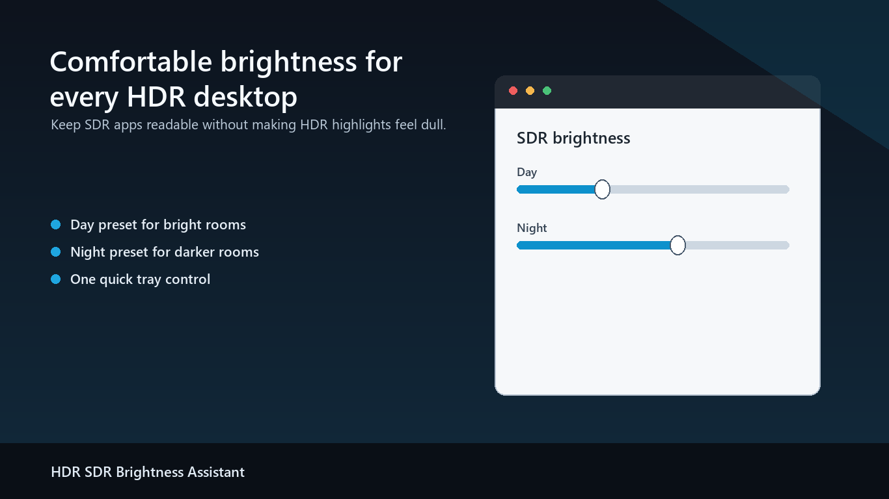
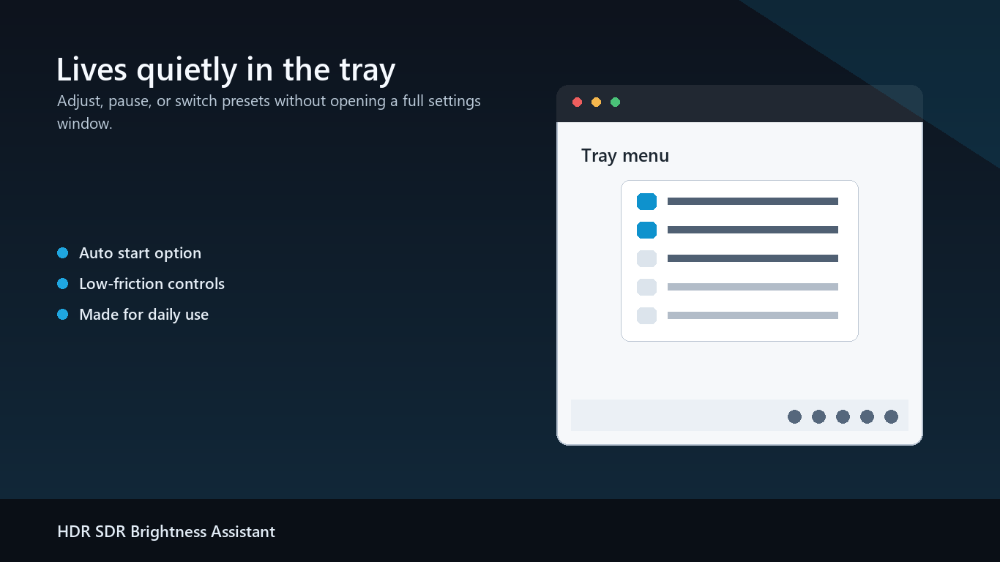
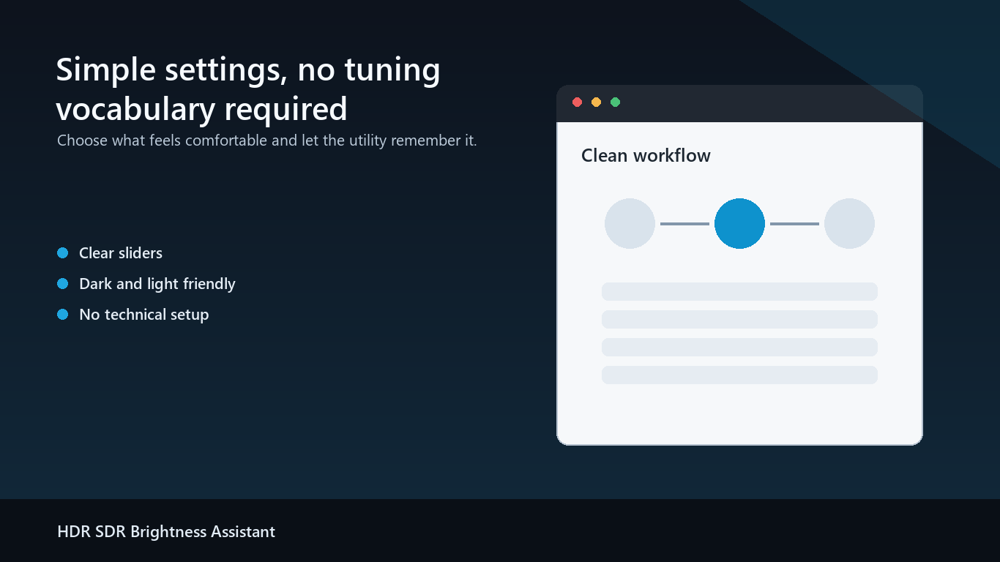

SDR 应用亮度更舒服
保持 Windows HDR 开启，同时应用你偏好的 SDR 内容亮度，让桌面应用不再忽明忽暗。
开着 Windows HDR，也让 SDR 应用亮度更舒服。支持白天/夜间亮度、托盘自动恢复，以及不容易过曝的 HDR 截图。
适合 OLED、QD-OLED、MiniLED、HDR 显示器、HDR 电视和 HDR 笔记本屏幕。开启 HDR 后，普通 SDR 应用可能发灰、刺眼、太亮或太暗。
保持 Windows HDR 开启，同时应用你偏好的 SDR 内容亮度，让桌面应用不再忽明忽暗。
可以分别保存日间/夜间 SDR 亮度，跟随 Windows 夜间模式，或使用内置时间表。
如果 Windows 或其他程序改动 SDR 亮度，托盘程序可以自动恢复到你设置的值。
支持区域和全屏 HDR 截图，带原生 tone mapping、物理像素输出、剪贴板复制、PNG 保存和标注。
不再捆绑 .NET 运行时，没有服务、驱动、账号登录或遥测；三个原生程序让便携包保持紧凑。
Microsoft Store 版本是付费应用，提供完整功能试用；没有订阅、广告或应用内购买。

设置舒适的 SDR 亮度，预览效果，应用一次，然后让程序在后台保持稳定。

很多普通截图工具会把 HDR 画面截得过曝或发灰。1.1 版本带来更快的原生截图流程、只保留最后一次截图请求、全屏最大化、以鼠标位置为中心的最高 8 倍滚轮缩放，以及中键拖动画面，方便精确标注。

不会。它主要控制 Windows HDR 下的 SDR 内容亮度，HDR 游戏和视频仍然保持 HDR。
不需要。程序以普通用户权限运行，不安装驱动，也不创建 Windows 服务。
不会。设置保存在本地，不需要账号登录，也不包含遥测或第三方追踪。
支持自动、简体中文、繁体中文、英文、韩文、日文、俄文和德文。
Store 版本可以直接安装、试用完整功能，并通过 Microsoft Store 获取更新。